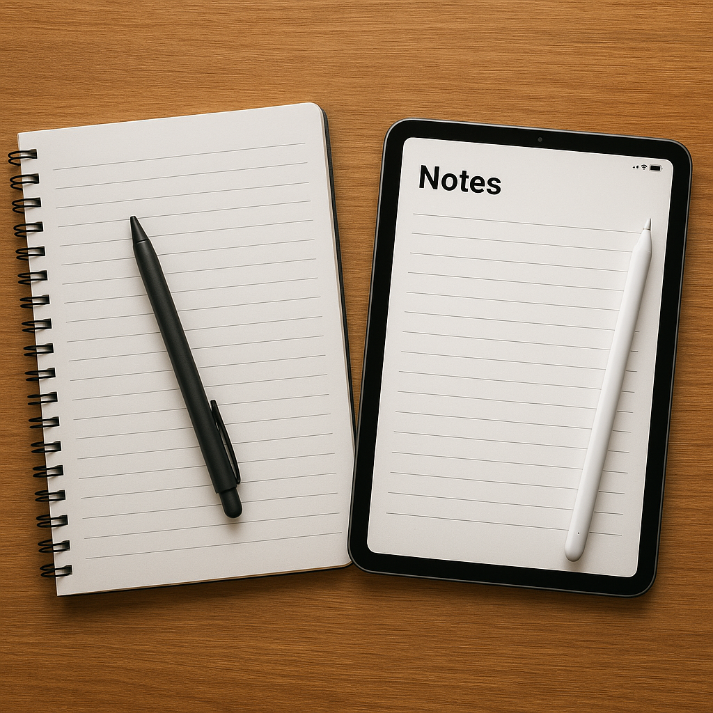

Why You Need to Make Notes
In a world overflowing with information, clarity is your greatest asset. From late-night ideas to mid-meeting insights, thoughts often vanish before we can act on them. What if there was a space — just yours — to preserve every thought, every plan, every learning?
That’s where the Note-Making App comes in. Whether you’re a student managing lectures, a developer planning logic, or an artist sketching your next masterpiece in words — capturing ideas is non-negotiable. Our platform is your digital vault — reliable, distraction-free, and easy to use.
Thousands have made the switch from scattered thoughts to structured success. The journey of clarity starts here.
Don't let your best ideas slip away. Make them count. Make them last.